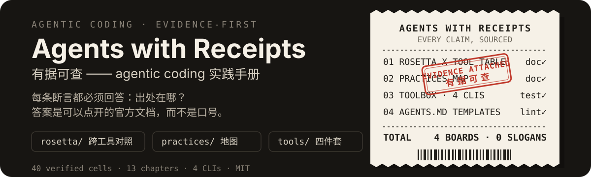

加载中…

加载中…
ABOUT · 这是什么
每条断言都必须回答一个问题:出处在哪?答案是可以点开的官方文档,而不是口号。市面上关于 Claude Code、Codex、Cursor 的最佳实践合集不少,但绝大多数是没有出处的断言(「CLAUDE.md 要短」「先规划再写码」)。这个仓库只回答关于一个仓库的两个问题:agent 读得懂它吗(AGENTS.md、条件规则、hooks、skills、CI 门禁),agent 在里面验得动自己的工作成果吗(一条命令跑完全部验证、确定性、失败留下的证据)。第一个问题决定 agent 会不会一开始就走错,第二个决定你敢不敢让它自己合 PR。四件东西共用同一条规则:没有出处的断言不收,过期的条目删掉而不是留着加个注解。
agentsmd-lint 给单个 memory 文件挑毛病:行数超标、模板占位符没填、含糊到 agent 无法执行的措辞、引用了不存在的 npm script、空的标题小节;agents-doctor 用 8 项检查看整个仓库的 agent 基建;agents-init 给还没有 AGENTS.md 的仓库写一份,只写它真的探测到的命令;verify-doctor 用 10 项检查按六个阶段报出验证回路的缺口(有没有一条命令跑完全部验证、测试是否确定、失败有没有留下可解析的证据与 artifact、UI 失败有没有留下截图/trace、跨模块引用会不会失败、逃逸口有没有被计数、flaky 有没有被清零或隔离)。verify-doctor 的探测是按生态写的,目前覆盖 JS/TS、Python、Go、Rust、Java/Kotlin 五个栈;其他语言上只有读 CI YAML 与仓库文件的那四项(单命令入口、失败证据与 artifact、模块边界、PR 证据模板)还能给结论,测试与逃逸口那五项一律报「不适用」并写明原因(ui-evidence 认的是框架配置而不是语言探针,无浏览器测试框架时同样报 info)——无可检之物时报 info 不报 ok,绿灯必须有信息量。四个都是零依赖的单文件 Node ESM 脚本(Node ≥ 20)。--json,输出同一套结构(tool / target / summary / results),level 只有 ok、warn、error、info 四种,stdout 里只有一个 JSON 对象,没有人类输出行也没有 ANSI 转义。退出码:0 干净,当且仅当存在 error 级结果时为 1,用法错误为 2 —— 用法错误时只往 stderr 写一行用法、stdout 保持为空,解析方不会读到半个对象。都可以原样放进 CI。这个仓库的读者一半是 agent,让它去正则匹配人类报告行不是输出格式,是接口缺失。/how / /why / /teach / /recall，并把这套问法固化成一份可提交的 skill。上面的票根导航和正文由浏览器直接读取仓库里的 Markdown 原文渲染,内容永远跟仓库这一份事实源同步;这里列出的章节页则是已经渲染好的静态页面,不依赖 JavaScript 也能打开。这里刻意没有任何性能或效率数字:仓库只统计自己的产物(格数、规则数、检查项数、章节数),不声称某条实践能让 agent 更快或更准——因为没有测过,编一个数字会违反它自己的规则。代码 MIT,文档内容 CC BY 4.0。